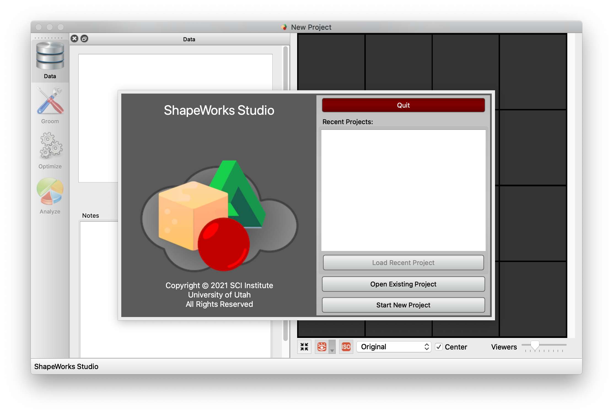
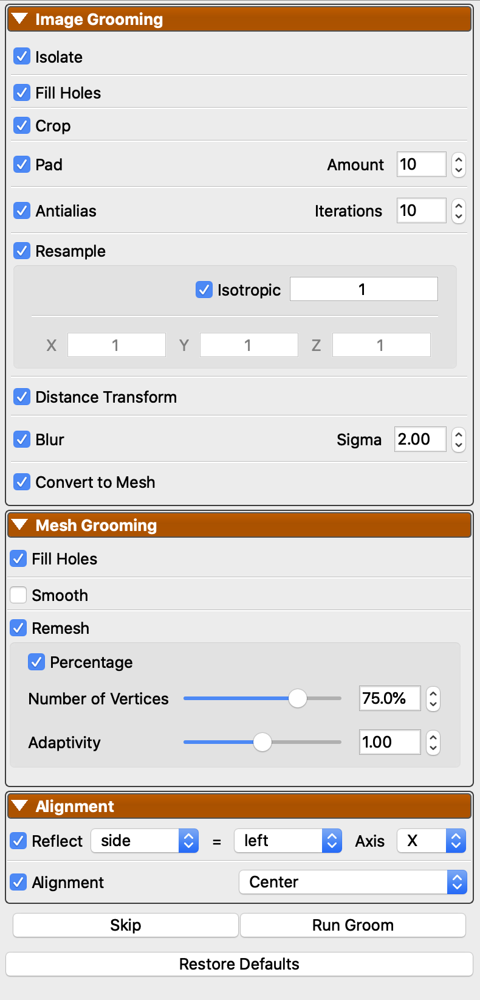
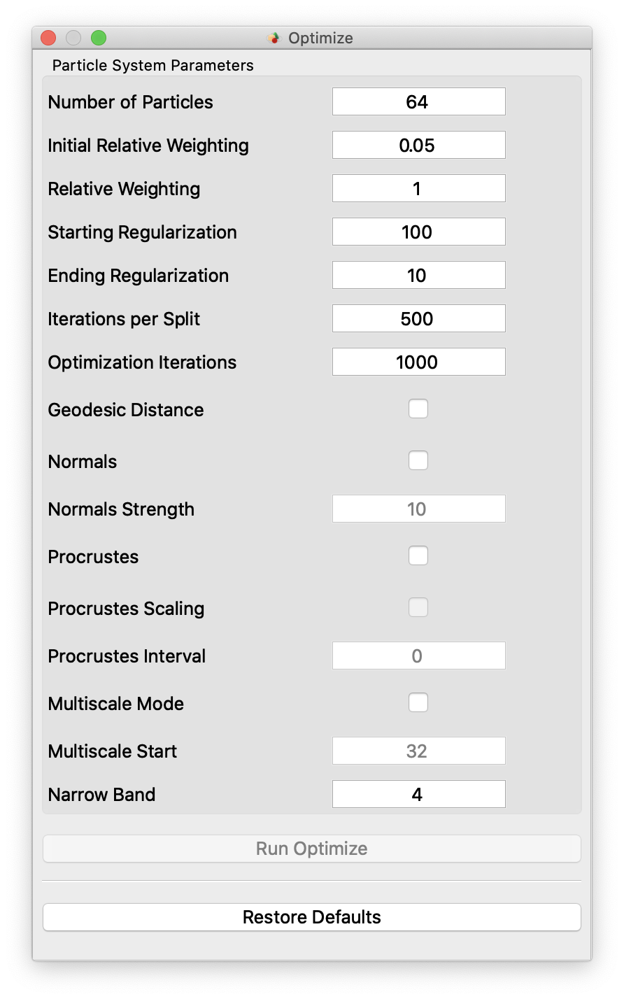
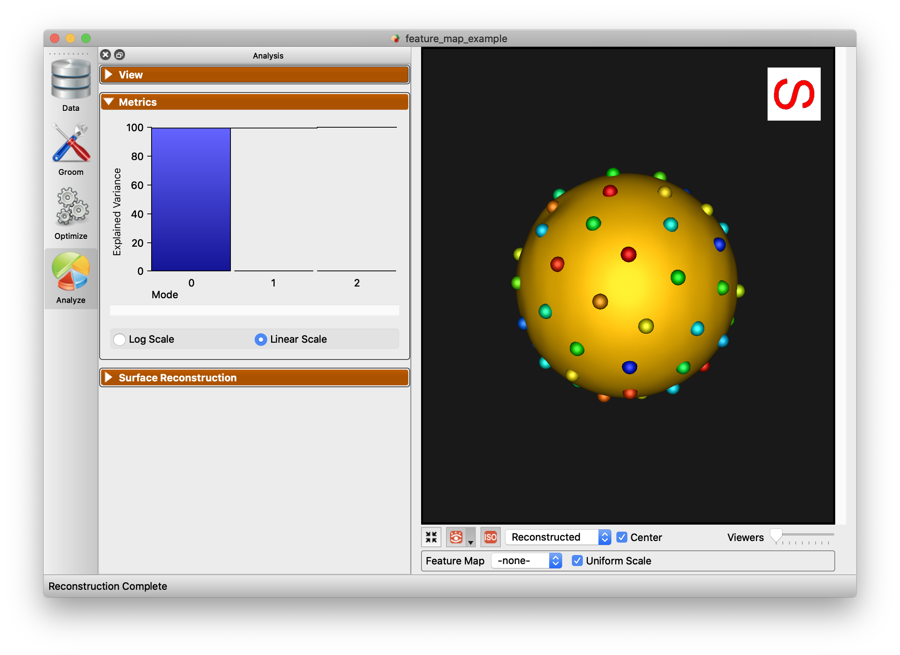
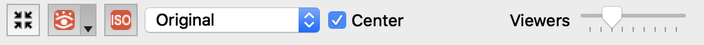
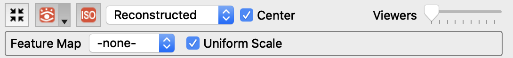

ShapeWorks Studio
ShapeWorks Studio provides an all-in-one GUI based interface to the ShapeWorks toolkit. In Studio, you can Groom, Optimize and Analyze your data all within a single interface.
Splash Screen
The splash screen provides access to recent projects and an option to create a new blank project.

Data Module
The Data Module shows the project data table as well as user-defined/saved notes. This module enables you to add and remove shapes (segmentations and surface meshes) to your cohort for further analysis.

Groom Module
The Groom module provides options to preprocess/groom the input data. Options differ for binary segmentations and meshes. You also have the option of skipping grooming if your data is already prepped.

Optimize Module
The Optimize module provides options for the particle-based optimization. After selecting options and clicking "Run Optimize", you can monitor the process of the optimization in real-time. Particle positions will be displayed on individual shapes as they progress where color encodes surface correspondences across different shapes in your cohort.

Analysis Module
After optimization is complete, you may analyze the data in Studio using the Analysis module. There are several panels available in the Analysis Module.
View Panel
The View panel contains all of the options for controlling the analyis viewer options.

Group
The Group mode allows for group comparison to quantify and visualize population-level differences. Each group_<value> column from the project can be selected and the differences between any two values (i.e., group identifiers) in the groups can be displayed by selecting the group values in the left and right dropdown boxes. A group difference display showing vectors and a colormap of distance can be shown using the "Diff -->" button.

Samples
The Samples tab of the view panel allows you to view all of the samples in your cohort, view a single sample by index, or view the median sample.

PCA
The PCA tab of the View panel shows reconstructed shapes (surface meshes) along PCA modes of variation. Modes of variations are shape parameters learned/discovered from your data that describes shape variations. You can control the location along the PCA mode with the Standard Deviation slider. The extent of this slider is configurable in Preferences. Values displayed:
Lambda - This shows the PCA loading of current position of the slider. The middle of the slider, at the mean value, will be 0. The extent of lambda is defined by the number of standard deviations of the slider as described above. At standard deviation of 1.0, it will be the square root of the mode's eigenvalue.
Eigenvalue - This shows the eigenvalue of the currently selected mode. This is a unitless measure of how much variance is explained by this mode. The modes are sorted in decreasing order of eigenvalue, corresponding to the most variance explained first.

Metrics Panel
The Metrics panel shows the Explained Variance chart. This chart shows how much of the population's variance is explained, cumulatively by each mode. You can hover over each bar to see the individual values.

Surface Reconstruction Panel
The surface reconstruction panel provides options for the surface reconstruction method. Using this option will provide smoother reconstructions.

Below is an example of the difference in using this option.

Preferences
Studio provides a number of preference options.

| Option | Description |
|---|---|
| Color Scheme | Base foreground and background colors for viewers |
| Orientation Marker Type | Medical, Triad, or None |
| Orientation Marker Corner | Upper Right, Upper Left, Lower Left, Lower Right |
| PCA Range | Number of standard deviations for PCA slider |
| Mesh Cache Enabled | Whether to use a cache of meshes |
| Mesh Cache Epsilon | Determination of how much different a mesh must be before it is considered a different mesh, for caching purposes |
| Mesh Cache Memory to Use | Percentage of phyisical memory to allow mesh cache to use |
| Mesh Parallel Reconstruction | Whether to use parallelized mesh reconstruction |
| Mesh Parallel Number of Threads | How many threads to use for parallelized mesh reconstruction |
| Log Location | A display of where the current log file is located |
Viewer Controls
At the bottom of the viewers are the controls for the viewers:

Each button has tooltips with descriptions. The controls from left to right are
- Autoview / reset view
- Glyph visibility with dropdown for glyph size and detail
- Isosurface visibility
- View mode (original/groomed/reconstructed)
- Center (whether to center each object based on center of mass)
- Number of views in lightbox (1,2,4,9,16,25,36,49,64)
Additionally, when feature volumes or meshes with scalars are loaded, the extended panel will be displayed:

This adds the feature map / scalar selection and a checkbox to apply a uniform scale to all viewers, vs local scale for each.
Keyboard Shortcuts
The keyboard shortcuts are available from the Help -> Keyboard Shortcuts menu item.

Point selection
As shown in the keyboard shortcuts panel, you can hover over a particle and press the '1' key. This will select this point on all viewers.
The selected point will become white and all other points will change to a color based on the distance to the chosen point.

To turn off this display, press '1' while hovering over something other than a particle.
Additionally, after selecting a point, you may select another point by pressing '2' while hovering. This will set the first point to white, the second point to yellow and the rest to black. This is an easy way to see how particlar particles vary and correspond across shapes.

File menus
Studio's file menu is shown below.

New Project- Create a new projectOpen Project- Open a project from diskSave Project- Save project to diskSave Project As- Save a copy of the project to a new fileImport Shapes...- Import new shapesExport- See export below- Up to 4 recent projects are shown at the bottom
The File -> Export menu is shown below.

- Export Current Mesh - Export the current mesh as a VTK mesh file
- Export Mesh Scalars - Export the mesh scalars as a CSV file
- Export Eigenvectors - Export the PCA eigenvectors
- Export Eigenvalues - Export the PCA eigenvalues
- Export Variance Graph - Export the variance graph as a PNG file
- Export PCA Component Scores - Export the raw PCA component scores for each subject as a CSV file
- Export PCA Mode Points - Export the PCA mode points at each step of the PCA slider
Project setup
ShapeWorks Studio and the shapeworks commands groom and optimize are using a new project format based off of XLSX. The new spreadsheet format profiles a uniform, easy to edit, easy to organize way of inputing data into shapeworks for grooming, optimizing and analyzing data.

Users input shapes (either binary segmentations or meshes) in the first sheet (or data sheet) using special column names to indiate type:
| Prefix | Description |
|---|---|
| segmentation_<name> | An input segmentation with a given name |
| group_<name> | An group column with categorical types |
| feature_<name> | A feature volume (such as an MRI or CT) |
Many other columns will be filled in automatically by the ShapeWorks tools.
A more complete example is provided in Examples/Studio/FeatureMap/feature_map_example.xlsx :

After completing groom and optimize steps, this worksheet will look like this:

There will also be new worksheets with parameters from those tools and other studio settings.